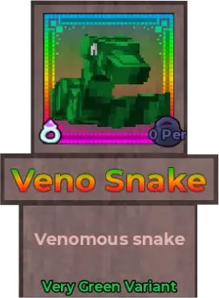
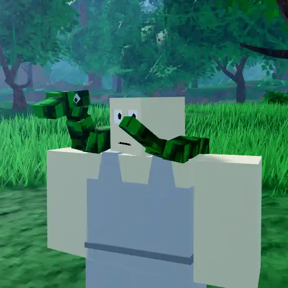
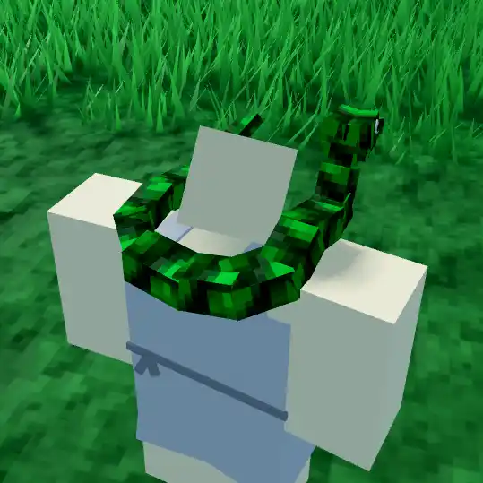
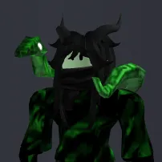
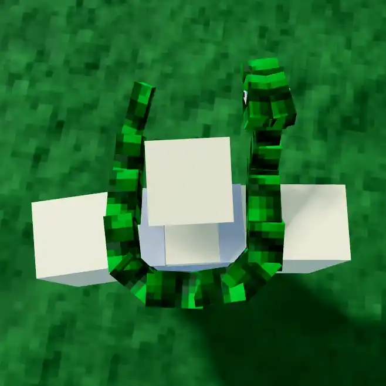
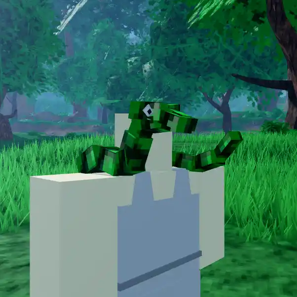
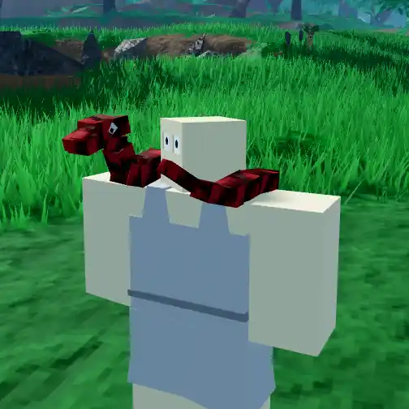
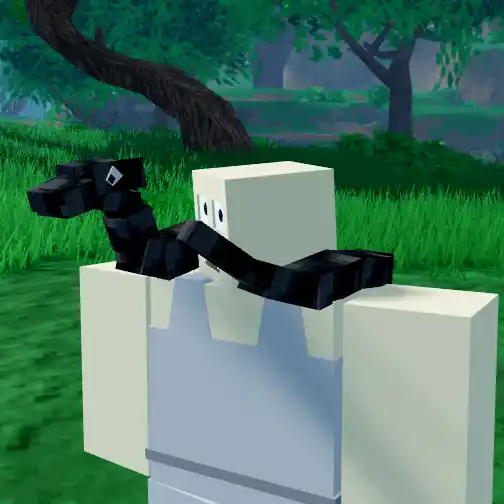

Veno Snake

Info
Slot: Accessory
Recolorable?: Yes
Unique Colors: Very Green
Particle Effects: None
Sound Effects: None
Owner: VenostyI
Appearance & Effects
In-game description: Venomous snake
The Veno Snake is a snake that sits around the player's neck. It's head rests on one shoulder while it's body wraps around the player's neck and the tail rests on the other shoulder. The snake comes in a default green, and it's entire body can be recolored, and it retains its black accents.
Inspiration
The Veno Snake was directly inspired by the owner VenostyI's Roblox avatar, seen below. It is nearly identical to the avatar item, other than being adapted for the artstyle of Taleara. The name of the relic is also a play on the VenostyI's name, calling it a 'Veno Snake' rather than 'Venomous Snake'.

A player wearing the Veno Snake

Viewed from the back
Image Gallery

VenostyI's Roblox avatar with the accessory that inspired the Veno Snake

Viewed from the top

Another angle

Colored red

Colored grey